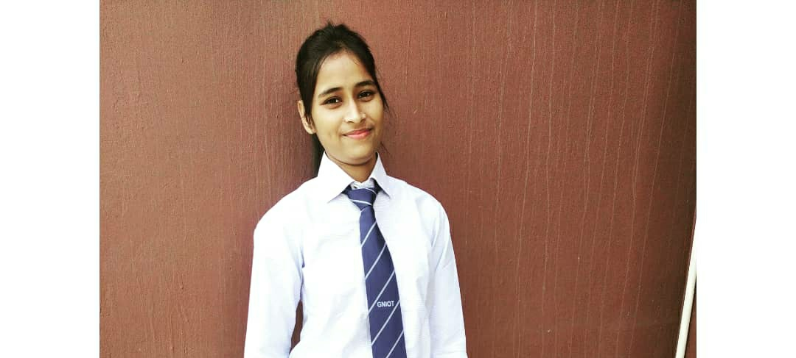

Contact: anjilachoudhary252@gmail.com
Linkedln: https://www.linkedin.com/in/anjila-choudhary-668417226
Github: github.com/Anjila Choudhay
|  | I am a passionate software engineer with expertise in problem-solving and algorithmic thinking. I love to explore various technologies and frameworks to develop efficient and scalable solutions. With a strong foundation in data structures and algorithms, I strive to create robust and optimized code. I am constantly expanding my skills and staying up-to-date with the latest advancements in the field of software development. |
Nov 2021- May 2022
This application develop a online job oppoutunityby using Full stack
Hoisted Link: Example.com/Job portal
This is to detect malware and keep safe the data
This for chat purpose